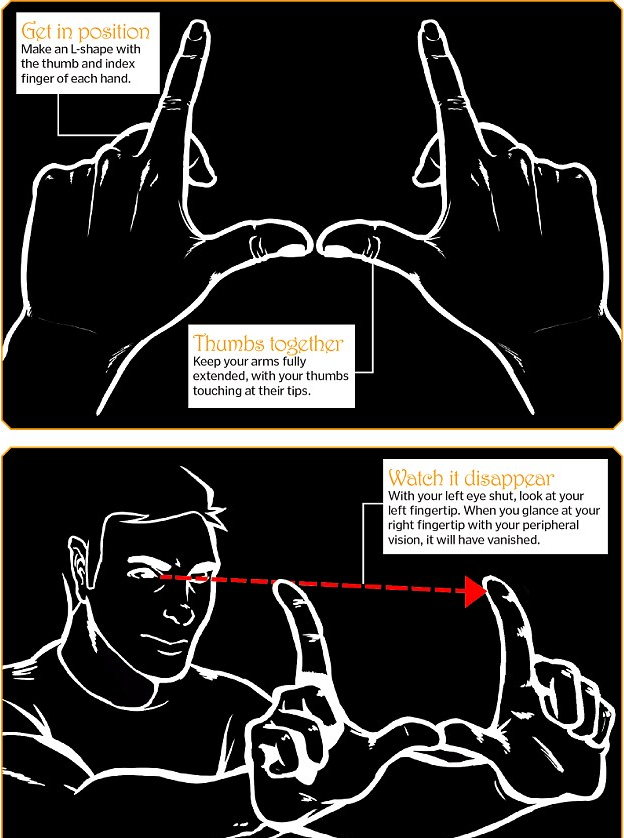

A magician must make a trick look effortless, but it's very unlikely that anything is casual or spontaneous in a magic show.
Just as you might go to a ballet and imagine the sweat and tears needed to achieve amazing dance moves, magic is choreographed but mustn't look like it is.
Artists of all kinds, including magicians, are connoisseurs of human behaviour and perception and now neuroscientists have revealed just how their tricks mess with our brains.
Magicians can alter a spectator's perception in a variety of ways, but their speciality is attention management - known as misdirection.
The concept of misdirection is often misunderstood. Audiences may believe the magician distracts their attention during a critical move or manipulation, but this isn't correct.
They do not strive to turn spectators' attention away from the 'method' – the secret behind the magic trick – but instead aim to direct their attention towards the magical effect.
This is a critical point, and the reason it works is grounded in neuroscientific findings about the way our attention is controlled, a bit like a spotlight, by the brain.
The spotlight of attention is a metaphor used by neuroscientists and magicians alike and refers to the fact we aim our attentional focus like a torch or flashlight.
Whatever object, person, or action we concentrate on appears more noticeable and even brighter than the rest of the scene. However, the neuroscience informs us that there is one fundamental difference between a person's 'attentional spotlight' and a physical one, for example.
The reason things become more noticeable when a person focuses on them is not that their neural circuits boost their perception to make them more focused, but that everything else is actively suppressed.
In other words, the spotlight of attention only seems to shine by comparison to the surrounding darkness. This means that magicians need only ensure that audiences aim their attention to specific spatial locations on the stage, and each spectator's brain will take care of suppressing everything else - including the secret method hiding behind the magical effect.
In a very real sense, a spectator's brain is the magician's assistant. Research suggests these enhancement and suppression processes are mediated by two different populations of neurons in the visual cortex – the area at the back of the brain that processes visual information.
How do magicians, then, drive the audience's attention to particular places and time intervals during a performance?
One effective way to misdirect somebody's attention is by changing where they are looking.
Magicians employ various strategies to control a spectator's eye position.
These include asking specific questions about particular items on stage, such as 'tell me what card this is,' or 'what is the year on this coin?' and using their own body language and gaze direction to induce joint attention behaviours in the audience.
Joint attention is the mechanism that makes people gaze at something when they see other people doing it.For example, if someone sees a crowd of people looking up in the street, they will find it irresistible to look up as well.
If the magician wants the audience to look at a specific object, he himself will pretend to be completely absorbed by it.
However, if the magician wants the audience to look at his face, he will direct his own gaze to the rows of seats – even if he can't actually see the audience due to the stage lighting – and the spectators will reciprocate.
Thinking is metabolically expensive.
The brain represents only two per cent of our total body weight, but it uses more energy than any other human organ, accounting for up to 20 per cent of the body's total.
Even that much energy is not enough to process the vast amount of information that constantly bombards our senses, so our brains have evolved to take shortcuts.
One such shortcut is a neural process called 'filling-in'.
A spectacular example of this takes place at the blind spot - a gap in your retina, devoid of photoreceptors, where the optic nerve leaves the eye on its way to the brain, near the very centre of your vision.
Luckily, the brain is good at guessing what should be there, so we rarely notice any gaps in the world around us.
To find your blind spot, extend both arms in front of you, with your elbows straight. Make an L-shape in each hand with your thumb and index finger, while keeping the other fingers curled inside your fists. Without bending your elbows, touch both thumbs together. Now close your left eye and look at your left index fingertip. Without changing your gaze, pay attention to the tip of your right index finger, and notice that it has disappeared.
Your index finger now ends right above the second or even the first knuckle. If the fingertip remains visible, wiggle the finger a little bit left and right to make it enter the blind spot region.
It is said that King Charles II of England used a similar party trick to decapitate prisoners before beheading them for real. Once your fingertip is gone, try to see what is occupying the same visual space. Do you see a great big black hole?
No, there is no gap where your finger should be. Instead, it feels as if you can see what is behind the finger. Yet that is impossible. What is actually happening is that your brain is using the information about the textures and colours surrounding your finger to fill in the visual void at the blind spot.
It is a pretty good algorithm, but not smart enough to reconstruct your actual finger. How our brains fill in the blind spot in our retinas is a dramatic example of how we fill in many other perceptual and cognitive gaps, not only in magic performances, but also in our everyday lives.
Magicians can be subtler than simply misdirecting their audience's gaze. They do not necessarily have to change the audience's direction of gaze in order to shift their attentional focus. When they succeed, audiences are looking at the right place, though without seeing, because their attention is engaged elsewhere.
One way to mess with somebody's attention, without diverting their gaze at all, is to split their focus.
The same attentional neural mechanisms that boost our perception - at the centre of the spotlight, and suppression - in the surrounding areas, make it very difficult for people to multitask. They have a single attentional focus, which cannot be divided without losing effectiveness. Magicians get audiences to multitask in a variety of ways.
One such strategy is the very design of certain magic tricks. One prime example is the 'cups and balls' trick, one of the oldest magic tricks known – there are even records of performances taking place in ancient Rome. It is usually performed with three cups placed upside down on a table. Balls and other objects magically appear and disappear inside the cups, much to the audience's amazement.
The way the performance is arranged forces spectators to split their attention between a minimum of three places on the table (the inverted cups), making their focus at most a third as precise as it might have been had they attended to a single location. The tactic is to divide the audience's attention and conquer their perception of what is happening.
Another way to make spectators try to multitask is to engage their senses and their mind in multiple ways simultaneously. Apollo Robbins, a world-renowned theatrical pickpocket, uses sight, sound and touch - tapping various parts of a volunteer's body onstage - to misdirect attention away from the pocket or wrist that he intends to steal from.
Many other magicians also use rapid fire 'patter' to overwhelm the audience's auditory and language processing capabilities.
So when Penn, from the duo Penn & Teller is talking a million words a minute on stage, what he's actually doing is bombarding his audience with information to keep their brains busy.
Another main goal is to create 'internal dialogue' in each spectator: if audience members are having even a simple inner discussion with themselves, they won't be focusing as much on what's going on right in front of their eyes. The Spanish magic theorist Arturo de Ascanio advised magicians to 'ask a discombobulating question'. Even by asking: 'Has anybody brought a scarf?' will get each spectator to ponder the question for a second or two. During that brief interval, they are trapped within their heads and unable to process other inputs efficiently; the magician is free to perform the secret move.
Our visual systems have evolved to detect motion.
Movement across the visual field can indicate the approach of a predator, or the escape of prey - it is inherently interesting to our brains, and automatically engages our attention in a reflex manner.
Not all types of motion are striking, though.
Magicians say that 'a large motion covers a small motion', by which they mean that a large, highly noticeable manoeuvre will hide a tiny but critical manipulation.
The curved motion of the magician's hand is more engaging to spectators than straight motion.
One reason is that motion in a straight line is much more predictable than curvy motion.
Whereas we only need the beginning and end points of a linear path to define it completely, a motion arch forces us to stay on target throughout, inadvertently missing the magician's sleight of hand.
Optical illusions: Think of smoke and mirrors. Like a pencil in a glass of water that appears to bend, these are illusions that rely on the physical properties of light.
Visual illusions: Unlike optical illusions, which are explained by the physics of light, visual illusions are constructed in the brain. An example of this is the filling-in of the blind spot.
Other sensory illusions: Magicians occasionally employ tactile and auditory illusions, sometimes in combination with visual information, to create multisensory misperceptions.
Cognitive illusions: These involve higher cortical areas of the brain that are involved in processes such as attention, memory and decision-making. Magicians manipulate all of these.
Special effects: Just like when you go to the movies, special effects in a magic show can include fake gunshots and explosions, adding drama to the occasion.
Mechanical devices and secret compartments:strong> Magic tricks can use simple or sophisticated technology to fool the audience. Magicians refer to such contraptions as gimmicks.
Emotion is also used to the magician's advantage, as feelings and attention are pretty incompatible.
This is one main reason why eyewitness reports are famously unreliable. Human memory is certainly limited, and more so when people are scared.
Some magic performances contain horror or gory elements – one of Teller's signature tricks is to 'drop' a cute rabbit into a wood chipper – but humour is the emotion that magicians choose to provoke most often.
Hilarity in a magic show increases the entertainment value and hampers the spectators' ability to concentrate. Johnny Thompson, also known as The Great Tomsoni, claims that while the audience laughs, time stops. It's during this interval that the magician is safe to make a move, perhaps in preparation for the next trick.
How is it that magicians have arrived to such a refined understanding of human nature?
One answer is that, whereas the field of cognitive neuroscience – the study of mental processes – is only a few decades old, the magical arts have been around for a very long time. Magicians have had millennia to figure out what works and what doesn't.
Spanish magician Miguel Angel Gea said that each performance is an experiment, every trick puts a hypothesis to the test. Even without applying the scientific method in any rigorous fashion, it makes sense that magicians must have figured out a thing or two about cognition and perception. Even if they have no better methods than trial-and-error, they are smart people doing serious analyses of the human condition; they will eventually discover a few important facts.
It is only recently that the neuroscientific community has come to appreciate how magic can conjure new insights into the human brain. In 2008, they coined the word 'neuromagic' and today, more than a dozen laboratories around the globe have conducted studies on the neural bases of magic performances.
Whereas not all magic theories have panned out in the lab, it has also become apparent that cognitive neuroscience, as a discipline, has reinvented the wheel sometimes – arriving to conclusions that magicians had held true for quite a while. It may be that these amateur brain hackers still have some tricks up their sleeves that can help advance neuroscientific discovery.